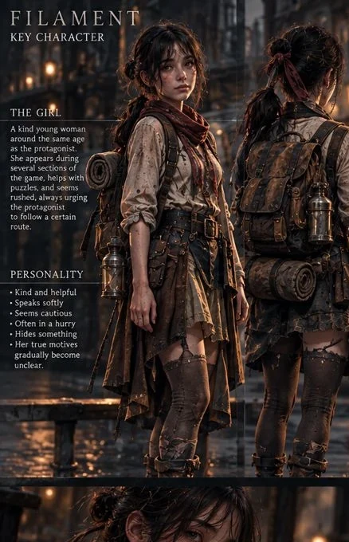

ENTRY 001
The first light
A bulb never asked me who I was.

A notebook, a folded map, a little light. Read imagined excerpts that demonstrate the physical journal experience, without revealing the story's secrets.
Select a page. These are illustrative writing samples for the website, not approved in-game dialogue.
A bulb never asked me who I was.
